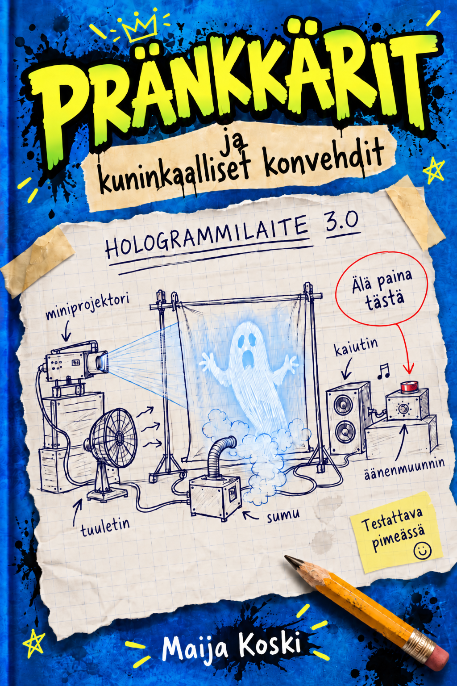

Harhajälki-sarja · osa 1
Harhajälki
Naantaliin sijoittuva mysteeriseikkailu, jossa salakirjoitukset, teknologia ja neljän nuoren uteliaisuus johtavat paljon tavallista koulutehtävää pidemmälle.
Tutustu HarhajälkeenMysteerejä, salakoodeja, teknologiaa, keksintöjä ja vähän vinksahtanutta huumoria varhaisnuorille – ja kaikille, jotka kaipaavat pientä seikkailua päiväänsä.
Harhajälki-sarja · osa 1
Naantaliin sijoittuva mysteeriseikkailu, jossa salakirjoitukset, teknologia ja neljän nuoren uteliaisuus johtavat paljon tavallista koulutehtävää pidemmälle.
Tutustu Harhajälkeen
Pränkkärit-sarja · osa 1
Keksintöjä, kommelluksia ja rikosmysteeri. Kun Make, Leevi, Isla ja Alina joutuvat keskelle sotkua, suunnitelmat harvoin etenevät aivan niin kuin piti.
Tutustu PränkkäreihinIT-nörtti jo ajalta ennen internetiä, tekoälystä innostunut mysteerien, salakirjoitusten, piilotettujen viestien ja robottien ystävä.